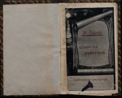

СИMag'rurlik va fidoiylik haqidagi mashhur falsafiy afsonalar.
Maksim Gorkiy qalamiga mansub ushbu asar uch qismdan iborat bo'lib, Larraning mag'rurligi va Dankoning o'z xalqi uchun yuragini sug'urib bergan jasorati haqidagi afsonalarni o'z ichiga oladi. Keksa Izergil yosh yigitga o'z hayoti va o'tmishdagi afsonaviy qahramonlar haqida hikoya qilib beradi. Asar insoniylik, fidoyilik va erkinlik g'oyalarini ulug'laydi.